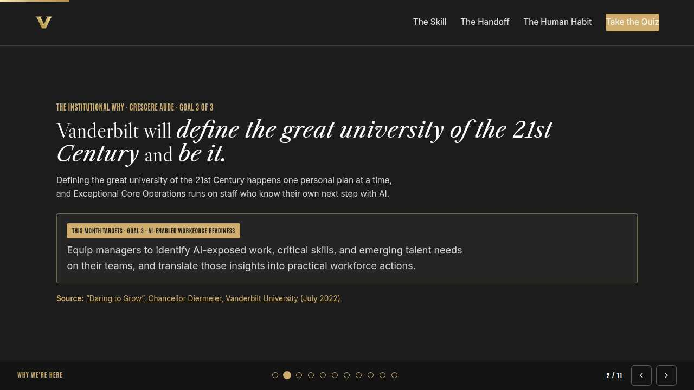
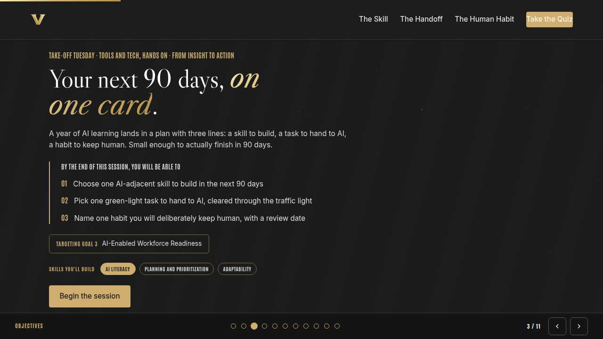
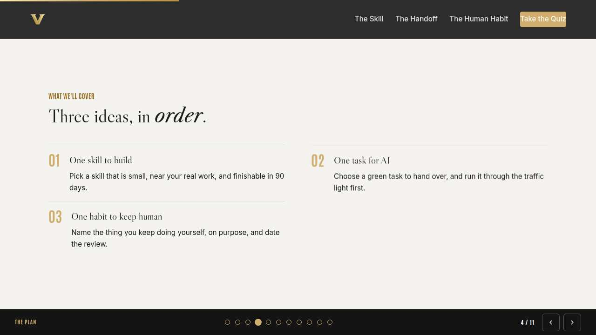
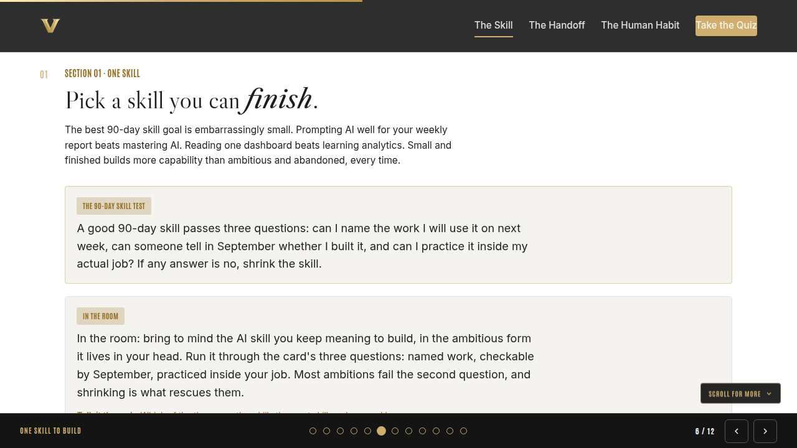
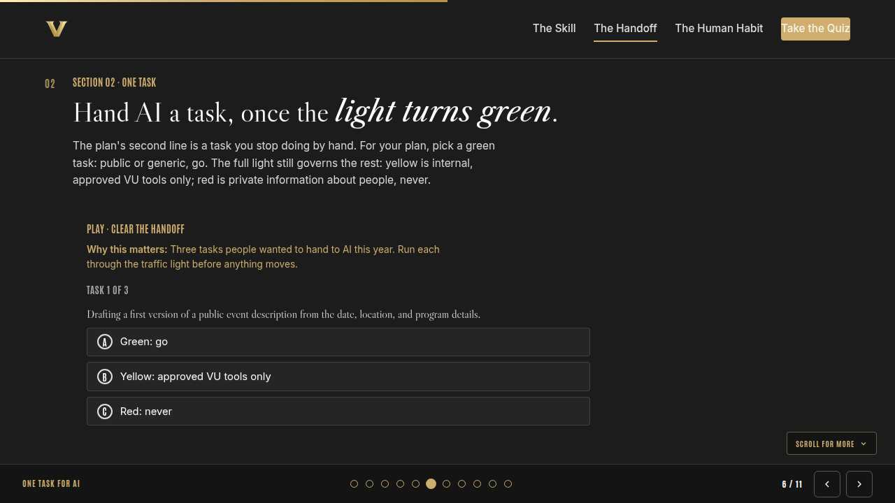
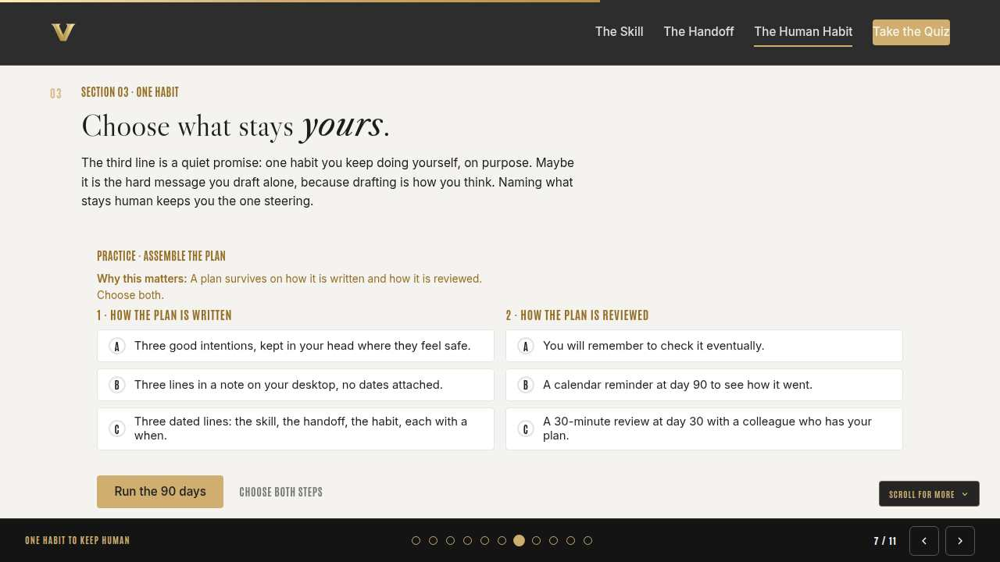
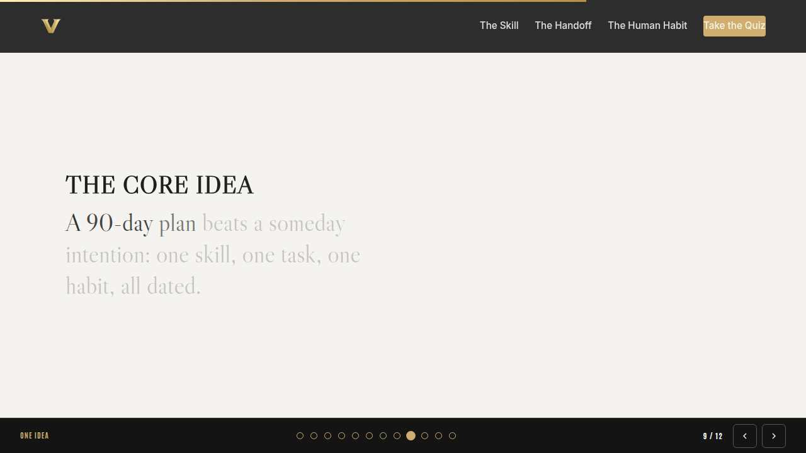
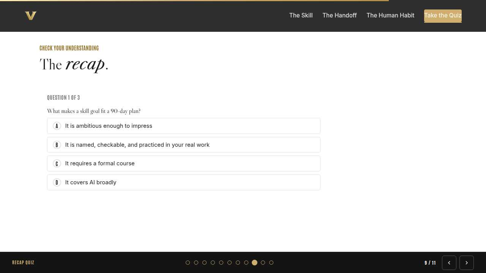
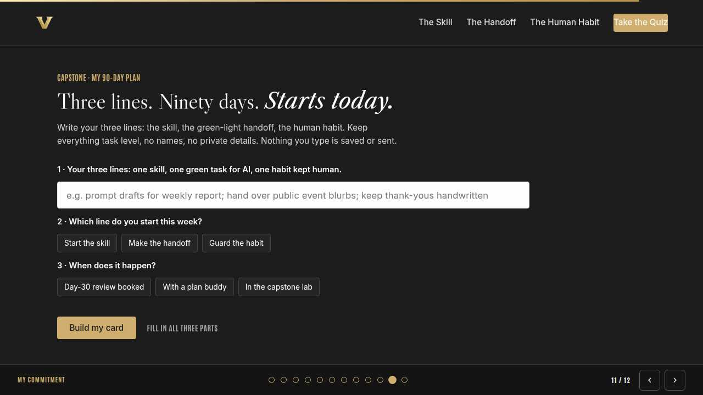
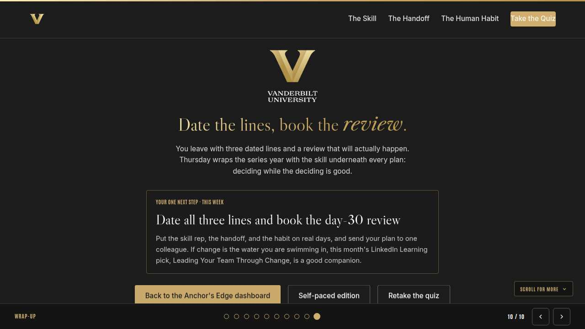

Vanderbilt · Anchor's Edge · ATD facilitator guide · print edition
The 90-Day Plan, the facilitator guide

Run of show
| Screen | Full (min) | Core (min) |
|---|---|---|
| Welcome / QR | 2 | 1 |
| Why we're here | 2 | 1 |
| Objectives | 1 | 1 |
| Agenda | 1 | skip |
| One skill to build | 9 | 6 |
| One task for AI | 11 | 8 |
| One habit to keep human | 9 | 6 |
| The core idea | 1 | skip |
| Recap quiz | 4 | 3 |
| Capstone commitment | 4 | 3 |
| Closing | 1 | 1 |
| Total | 45 | 30 |
The goal this month serves
Goal 3, AI-Enabled Workforce Readiness.
Audience
All Vanderbilt staff in the Anchor's Edge weekly rhythm; no one is assumed to manage anyone. Works for 6 to 40 on a call; breakouts run in pairs. June closes the series year with From Insight to Action; the traffic light from January and April carries straight in.
Room setup
Virtual, instructor led: camera on, deck link in chat, breakouts of 2 available. Learners follow on their own screens via the welcome-slide link or QR. Nothing typed into the deck is saved or sent.
Materials
- Meeting platform with screen share and breakout rooms; deck link ready to paste in chat
- Facilitator machine with the facilitator edition open; notifications off
- Learners on their own devices with the learner link
- Chat open for share-outs; the capstone copy button pastes there cleanly
A week before
- Run the learner edition start to finish and do every interaction honestly; you will demo at least one live.
- Read this month's theme page on the Anchor's Edge dashboard so the goal tie-in is fluent.
- Send the invite with the learner link and one line on what to bring.
The day before
- Test screen share with the facilitator edition; confirm the notes rail is readable.
- Open the learner link on a second device; the QR must land there.
- Run the section interactions once so you can drive them without reading.
30 minutes before
- Welcome slide up as people join; link pasted in chat.
- Close every other tab; silence the machine.
- Breakout rooms pre-configured in pairs.
When things go sideways
If Screen share or the site fails mid-session: Paste the learner link in chat and narrate from your own browser; every interaction runs on learner devices without the share.
If Breakout rooms are unavailable: Run the breakout prompts as 60-second chat storms: everyone types their answer at once, you read the best three aloud.
If Someone's chosen handoff task comes up yellow or red: Thank them for running the light honestly; that is the win. Yellow tasks can live in approved VU tools day to day; for the plan line, help them find the green task nearby: the generic template, the public draft, the reformat.
If A participant says their job has no AI-touchable tasks: Go smaller: a first draft, a summary, a reformat. If the light and the tools truly rule everything out, their plan leans on the skill and habit lines, which is still a complete plan.
Tough questions, ready answers
Q: Is it safe to put my 90-day plan into an AI tool to improve it?
Run the light. The plan as written here is generic, task-level text about your own work: green territory, and an approved VU tool is always the safer default. The moment a plan mentions colleagues, performance, or any private detail about a person, that part is red: never.
Q: What if I hand a task to AI and the quality drops?
That is what the day-30 review is for: catch it while the plan is alive. Keep the handoff as a first-draft step with your own review on top; quality usually recovers when the human stays as editor. If it does not, swap the task, and the plan still stands.
Q: Ninety days from June lands in September. Does the plan survive summer schedules?
That is exactly why the plan is three lines instead of ten, and why the review sits at day 30, before the heaviest vacation stretch. A small plan bends around a summer; an ambitious one breaks against it.
Copy-paste templates
Pre-work invite (paste into the calendar invite)
Subject: Tuesday, 45 minutes to build your 90-day AI plan. Bring one task you are tired of doing by hand and one skill you keep meaning to build. You will leave with a three-line plan with real dates. Live and interactive; have the session link open on your own screen.
7-day pulse (send one week after)
Subject: Are the three lines dated? Three lines, reply whenever: 1) Are your skill, handoff, and habit on real dates? 2) Did the first rep or handoff happen? 3) Who holds your day-30 review?
After the session
Seven days out, send the pulse: 'Are your three lines dated? Did the first skill rep or handoff happen? Who holds your day-30 review?' Count of plans with a booked day-30 review is the Level 3 metric for the month.
Welcome / QR Full 2 min · Core 1
Get everyone into the deck on their own screen and set the tone: 45 minutes, live, hands on.
Say
“Welcome to Take-Off Tuesday. Scan the code or click the link in chat so this session runs on your screen too. Forty-five minutes, one focus: Building a 90-day AI action plan.”
Do
- Slide up as people join; link pasted in chat every few minutes.
- State the norm once: type into your own screen, nothing you enter is saved or sent.
Watch for: People lurking without the deck open. The interactions only land if the deck is on their screen.
Transition: “Before the topic, thirty seconds on why Vanderbilt is asking for this hour.”

Why we're here Full 2 min · Core 1
Anchor the session in the Chancellor's charge and name the goal this month serves, inside one minute.
Say
“One sentence from the Chancellor sits over everything we do: Vanderbilt will define the great university of the 21st Century and be it. Defining the great university of the 21st Century happens one personal plan at a time, and Exceptional Core Operations runs on staff who know their own next step with AI. This month serves Goal 3, AI-Enabled Workforce Readiness.”
Do
- Read the mission line slowly, once; name the goal, once.
- No discussion here; the whole slide is under a minute.
Transition: “Here is what you will be able to do in 45 minutes.”

Objectives Full 1 min · Core 1
Set the contract for the session in under a minute.
Say
“By the end of this session: choose one ai-adjacent skill to build in the next 90 days; pick one green-light task to hand to ai, cleared through the traffic light; name one habit you will deliberately keep human, with a review date. That is the whole contract.”
Do
- Read the three objectives briskly; do not elaborate yet.
Transition: “Three stops to get there.”

Agenda Full 1 min · Core skip
Show the path so the room can pace itself.
Say
“Three stops: one skill to build, one task for ai, one habit to keep human. Each one has something to play with, so keep the deck open.”
Do
- Point once at each stop; ten seconds each.
Transition: “Stop one.”
Core path: Core: skip the read-through, gesture at the slide in passing.

One skill to build Full 9 min · Core 6
Shrink skill ambitions into one named, checkable, 90-day goal.
Say
“A year of AI learning could fade into a shelf of good intentions. It is going to land in a plan instead, and the plan has exactly three lines. Line one is a skill, and the discipline is smallness: a skill you can name the work for, check by September, and practice inside your actual job.”
Do
- Read the 90-day skill test card aloud, all three questions.
- Read the In the room card; everyone runs their own skill through the three questions silently.
- Lead the discussion: which question kills the most goals? Then run the breakout: trade skills and shrink each other's until they fit.
Ask
“What is the smallest useful version of the skill you just thought of?”
Expect:
- A named task with a tool attached
- Some resistance; the ambitious version feels better
Respond: Honor the ambition, then aim it: the big version is the direction, the small version is the plan. September can only check the small one.
Debrief: Named work, checkable by September, practiced inside the job. Any skill that passes those three questions is plan-ready.
Watch for: Goals stated as courses to take. Courses feed skills; ask what task the course serves.
Transition: “Line two: the task you stop doing by hand.”
Core path: Core: skip the breakout; collect three shrunken skills in chat.

One task for AI Full 11 min · Core 8
Choose a green handoff task and clear it through the traffic light.
Say
“Line two is a task you hand to AI. For the plan we keep it green: public or generic, go. The rest of the light still governs your week: yellow means internal, approved VU tools only, and red means private information about people, never, in any tool, for any reason. The task can be small; the discipline cannot.”
Do
- Run Clear the handoff live; everyone plays on their own screen.
- After round three, restate red in one breath and let it land.
- Run the breakout: each person's real task through the light, out loud.
Ask
“Where do well-meaning handoffs usually go wrong?”
Expect:
- Internal content in a personal tool
- People data hiding inside an innocent-looking task
Respond: Both. The fix is the same: say the color out loud before the task moves. A handoff you cannot color is a handoff that waits.
Debrief: The plan's second line is two decisions: the task and its color. For the plan, green only; write both on the card.
Watch for: Anyone rationalizing a red task as anonymized. Names removed is still information about people: red, never.
Transition: “Two lines down. The third line is the one you keep.”
Core path: Core: run the trainer, skip the breakout, one voice on the debrief.

One habit to keep human Full 9 min · Core 6
Name a deliberate human habit and assemble the dated, reviewable plan.
Say
“The third line is different: it is the thing you keep doing yourself, on purpose. Everyone has work where the doing is the point; for a lot of us it is the hard message we need to draft alone. Naming yours keeps the plan honest. Then we assemble all three lines into something with dates and a witness, and the dates are not decoration. Heidi Grant's if-then planning research in HBR found that people who decide in advance when and where they will act follow through at far higher rates. A dated line is an if-then in disguise.”
Do
- Ask for human-habit examples in chat before the builder; read two aloud.
- Run Assemble the plan; two minutes for both choices.
- Point at the pattern: dated lines, early review, a witness.
Ask
“Why does a plan about using AI more include a line about using it less?”
Expect:
- It keeps judgment sharp on the work that matters
- It makes each handoff a choice you made
Respond: Right. The habit line is proof you are steering. People who name what stays human hand off the rest with much less anxiety.
Debrief: Three lines, all dated, reviewed at day 30 with a witness. That is a plan a real September can grade.
Watch for: Plans with five skills and three handoffs. More lines mean fewer finishes; hold them to three.
Transition: “Quick recap, then you write the real one.”
Core path: Core: skip the chat collection; run the builder solo.

The core idea Full 1 min · Core skip
Land the one sentence the session exists to install.
Say
“If you keep one sentence from today, this is it. Read it once, out loud: A dated 90-day plan beats a someday intention, and it only takes three lines.”
Do
- Pause two beats after reading; the word animation carries it.
Transition: “The recap makes it stick.”
Core path: Core: pass through in stride; the sentence reads itself.

Recap quiz Full 4 min · Core 3
Score the learning while it is fresh; wrong answers are teaching moments, not failures.
Say
“Three questions, on your own screen. Answer honestly; the explanations are where the learning sticks.”
Do
- Give the room 90 seconds to run it individually.
- Ask for a show of results in chat: how many got 3 of 3?
- Read out the explanation for whichever question drew the most misses.
Watch for: Rushing past the why lines. The explanations carry the teaching.
Transition: “Now point it at your real week.”

Capstone commitment Full 4 min · Core 3
Convert the session into one named, dated action per person.
Say
“Now write yours. Three lines: the skill, the handoff with its color, the habit. Pick the line you start this week and how the day-30 review happens. Build the card, copy it somewhere permanent, and send it to one colleague today. Two minutes, quiet, go.”
Do
- Two quiet minutes; everyone builds their own card.
- Invite two or three volunteers to read their card aloud or paste it in chat.
- Remind: copy the card somewhere you will see it this week.
Watch for: Vague entries. Nudge for a name-able situation and a real date.
Transition: “Last slide.”

Closing Full 1 min · Core 1
End with the next step and where this thread continues.
Say
“When this series year opened, most of us were circling AI at a safe distance. Today you wrote a plan that names what you build, what you hand over, and what you keep. On Thursday, Thrive Thursday wraps the series year with decisiveness, the move from data to decision, and it is a fitting last word; be there for the landing. If you want company for the 90 days, this month's LinkedIn Learning course, Leading Your Team Through Change, and the navigator-led action-planning lab are both open to you.”
Do
- Point at the next-step card; one sentence.
- Name the rest of the week's rhythm: the other sessions echo this month's theme.
Generated from facilitator/notes.json. The on-screen facilitator edition lives at ./ alongside this guide.